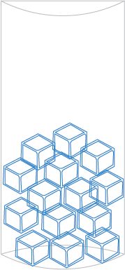

Step 1: Brew your Espresso
Brew a double shot of espresso using your favorite pod or ground coffee.
Let it cool for a few minutes before pouring over ice.
Step 2: Prepare the Glass with Ice
Use a tall glass and fill it with ice cubes. This will keep your latte refreshingly cold.

Step 3: Add Milk and Creamer of Choice
Step 4: Add in the Espresso
Step 5: Mix Gently
Step 6: Sip and Enjoy!